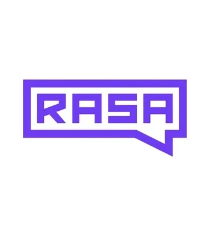
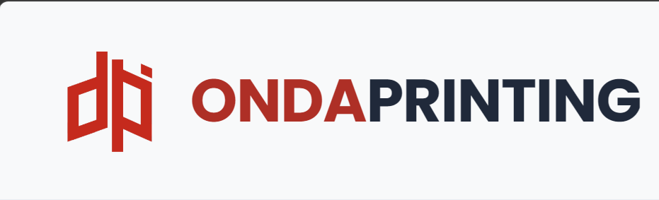

Tentang Saya
Saya memiliki minat mendalam dalam memecahkan masalah kompleks melalui teknologi. Saat ini, saya fokus mengejar peluang IT Internship untuk berkontribusi di lingkungan korporat, khususnya industri perbankan yang menuntut presisi dan keandalan data. Saya terbiasa menganalisis data, membangun model cerdas, dan merancangnya menjadi solusi yang aplikatif.
Keahlian Teknis
Project Unggulan

Medical Chatbot
Pengembangan chatbot medis berbasis Artificial Intelligence untuk mendeteksi gejala awal pasien dan memberikan rekomendasi kesehatan.

WEB Perusahaan Onda Printing
Pengembangan chatbot medis berbasis Artificial Intelligence untuk mendeteksi gejala awal pasien dan memberikan rekomendasi kesehatan.

Website Portofolio Responsif
Merancang antarmuka website yang bersih dan responsif menggunakan HTML5 dan CSS3 Modern. Dilengkapi fitur Dark Mode.
Website Portofolio Responsif
Merancang antarmuka website yang bersih dan responsif menggunakan HTML5 dan CSS3 Modern. Dilengkapi fitur Dark Mode.